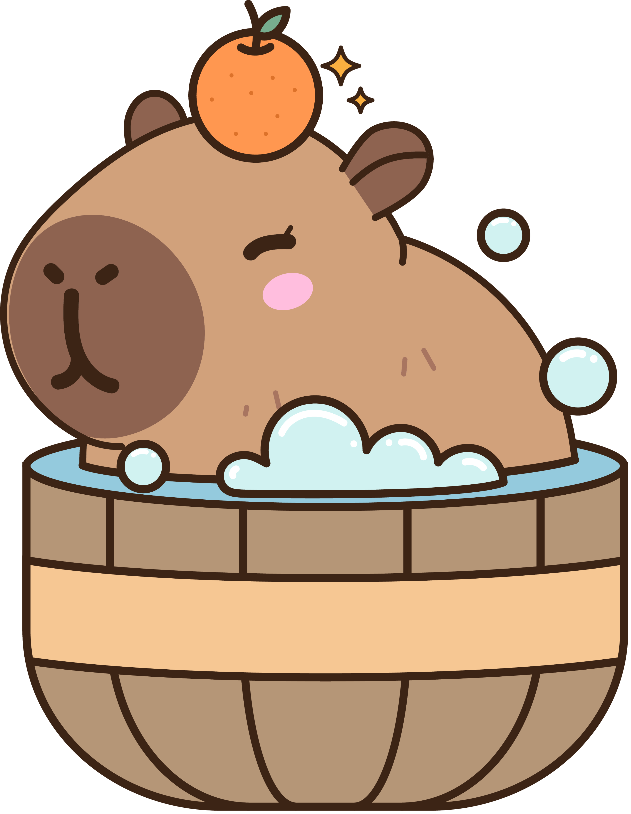
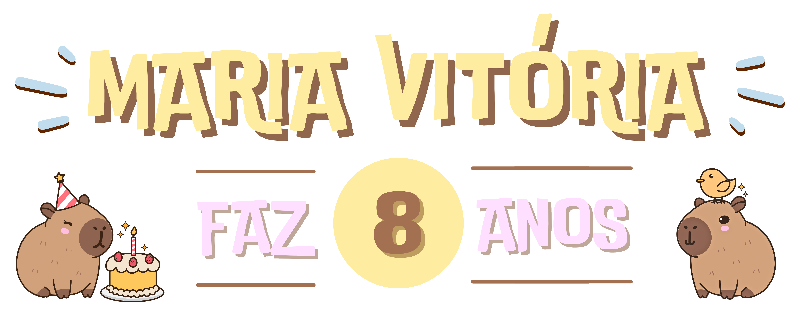
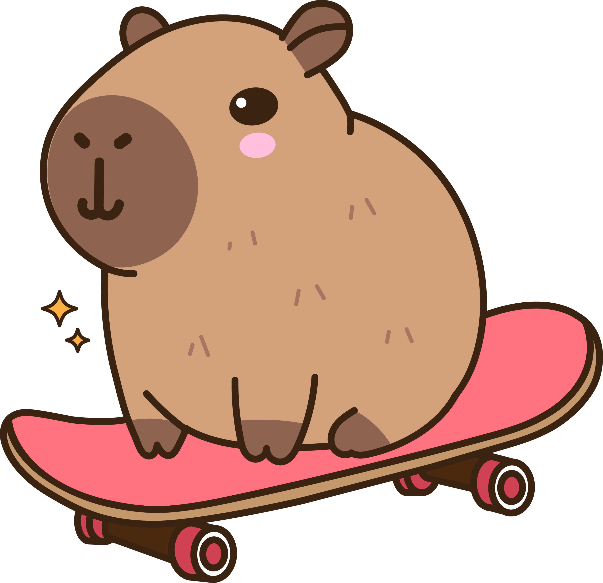
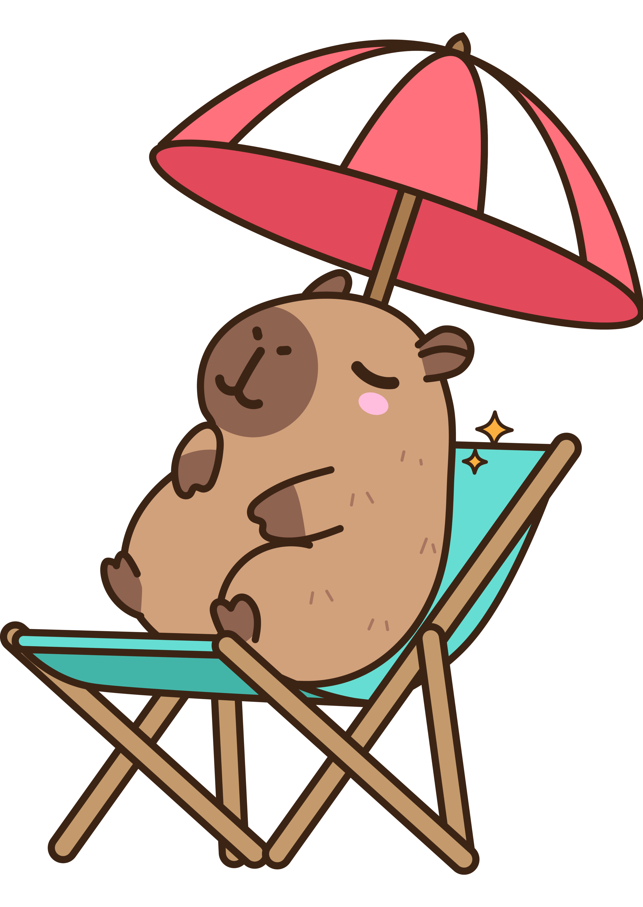

Sua presença é mais do que especial!
Vamos comemorar o aniversário de 8 anos da Maria Vitória, e será uma alegria ter você com a gente!
Por favor, confirme sua presença até o dia 28 de outubro.


Vamos comemorar o aniversário de 8 anos da Maria Vitória, e será uma alegria ter você com a gente!
Por favor, confirme sua presença até o dia 28 de outubro.

📅 Data: 01 de novembro de 2025
🕓 Horário: 15h às 19h
📍 Local: Rod. Mábio Gonçalves Palhano, 3350

Para a segurança e o conforto de todos, cada criança deve estar acompanhada por um adulto responsável durante toda a festa.
Caso o dia esteja quente, teremos atividades com água, como piscina e futebol de sabão. O espaço conta com vestiários para troca de roupa — lembre-se de levar uma troca extra, toalha, protetor solar, chapéu, óculos de sol, chinelos, bóia, etc.

As capivaras são os maiores roedores do mundo!
Para entrar no clima da festa, assista a este vídeo com curiosidades sobre este animal tão amável!
 Confirmar Presença
Confirmar Presença